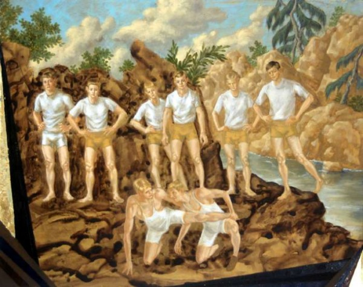
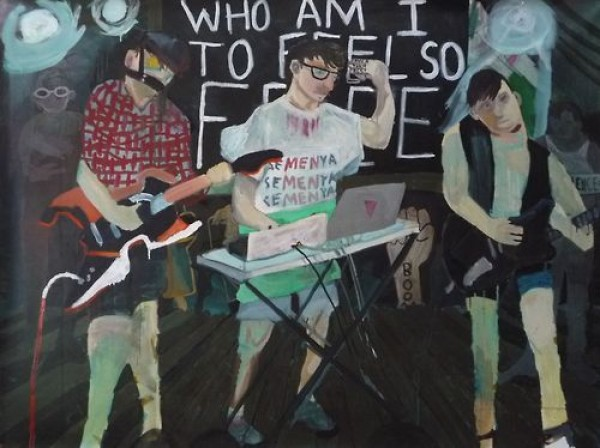
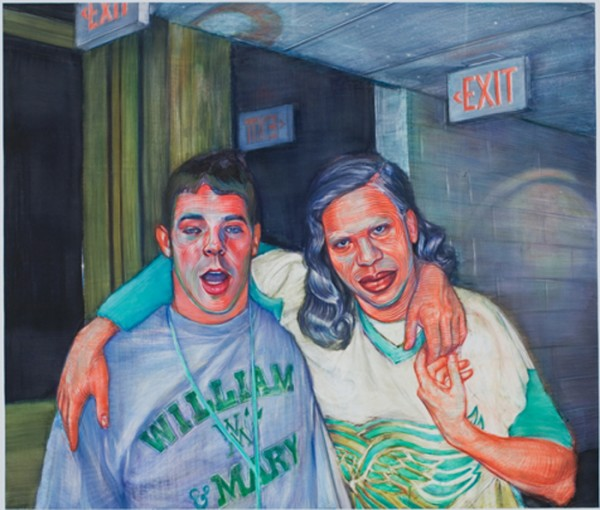
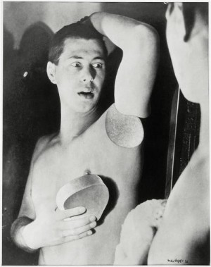
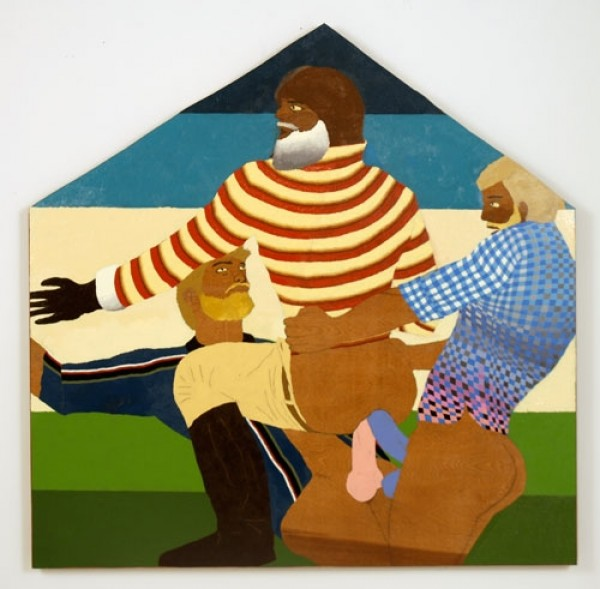
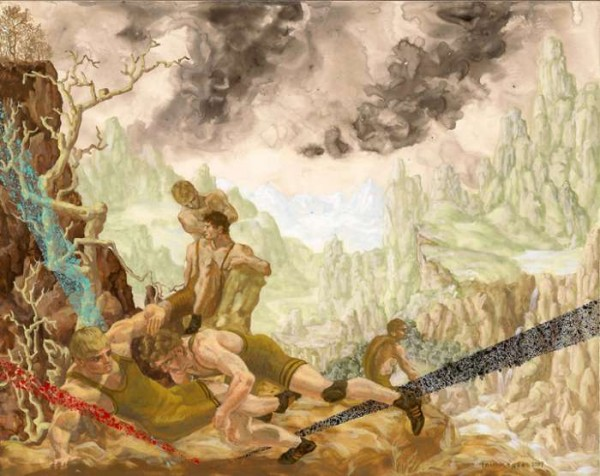

-
Macho, MotherMan, Men: Rethinking Masculinity
by Idiom January 14, 2011
Late last year, a panel entitled Macho Man, Mother Man: Rethinking Masculinity with Geoffrey Chadsey, Leidy Churchman, Thomas Lax, Hudson Taylor and moderated by Colleen Asper, convened at Monya Rowe Gallery in conjunction with Larissa Bates’ ongoing Man Enough. What follows is a pastiche of transcriptions, emails exchanged ex post facto, and prepared statements. It is an attempt at documenting a small part of an extensive and many layered conversation.
Larissa Bates: How concepts of masculinity connect to a sense of self worth, power, psychology, and affect family structures are of particular meaning to me. My own interest in masculinity and male gender scripts grew from being raised by a single father during early childhood. With the exception of having the privilege to choose an alternative hippy lifestyle, my father fit the sociologist Erving Goffman’s 1963 normative prescription for masculinity.
And I quote Goffman:
In an important sense there is only one complete unblushing male in America: a young, married, white, urban, northern, heterosexual Protestant father of college education, fully employed… and a recent record in sports.
Having grown up with the privileges and limits of this heterosexist, racist, class-ascribed masculinity, my father suddenly found himself occupying the marginal role of young widow and single parent. What were the dominant cultural models of masculine grief at the time? He may have sublimated his loss in terms reflected in constructions of masculinity—the man as utterly self-reliant, stoic, and independent. He dug a hole in a hill, built a kind of cave house, and renounced electricity and indoor plumbing. In essence, he became a devastated cave man.
There was a dearth of cultural images to reflect the complexity and depth of his newfound role, nor images to portray how I perceived him. The heavily bearded, lumbering 6 ft 4 inches of his stonemason’s frame came to symbolize, among other things, nurturing, comfort, and care, to my young self.
Virgin Marys proliferated around the necks, above the doorframes, and upon the bed stands of the Costa Rican relatives of my Mother’s family. Mary, eternally clutching baby Jesus to her bosom, seemed the pinnacle of nurturance. It also seemed that what my father and I needed was our own creation myth, starring our very own Virgin Mary Man. This was how the MotherMan character was born into my paintings.
Because I was in charge of ascribing MotherMan’s characteristics, I could make a kind of super-human deity. Thus the MotherMen are the very epitome of nurturance and benevolence, whose presence calms the neurosis of all those who surround him. He simultaneously embodies the giant physicality of my father—only updated into a young wrestler. I don’t think my father took much solace in my supposed paintings to him, but they provided a romanticized reflection of my experience—and one I desperately needed.
It would help to define our terms for the evening’s discussion of masculinity. However, it is difficult to define masculinity because of the given mutability of gender as it relates to culture, race, class, and sexuality. Furthermore, masculinity can be understood through a variety of structural lenses. The conservative ideology of masculinity as universal, unchangeable, and largely connected to biology, varies greatly from perspectives of feminist theory, queer theory, or the Men’s rights movement, which postulates men as mutual victims of patriarchal structure, just to name a few.
Leidy Churchman: As a painter working with queer images, and as an artist that makes videos that integrate paint into the process, I’m interested in what the act of painting accomplishes as a piece of gender performance. It’s possible to see Pollack as sort of taking back his masculinity from the press by doing his action painting. For me, I feel like I’m bringing whatever I want to that place; if it is seen as something really masculine, then that’s as much about perception as about the reality of the action or image. I’m always interested in dressing bodies in this respect, asking the question of when they become bodies, or when they function as landscapes. Are they figures? Are they people? Are they dead? Are they alive?
Celeste Dupuy-Spencer: I am a painter too, and I use un-stretched canvas as a surface. Looking at art history as an art-historical painter, one sees that it is largely the painting of men doing masculine things. I am trying to take the gender question out of it completely. Once gender is gone people automatically assume a masculine focus but honestly, it is not something I really think about in terms of myself or my painting. I feel like I have no say, in the end, in how I or my paintings are perceived — if that is masculine or otherwise.
Geoff Chadsey: I’m a drawer. Kind of a backdoor painter. But I think in terms photographs. I draw photographs that I nab from online chat sites. They are other people’s self-portraits. I tend to morph them a bit, change the hair etc. I think we are, all of us on this panel, in one sense invested in breaking down masculinity, but we are also pursuing it, in another.
Thomas Lax: I have come to believe that there is a real indeterminacy involved in gender. I have been thinking a lot about Adrian Piper, who is thinking about the impossibility of locating what gender might mean, and moving away from the visual. Gender might be a way of naming temporality, loss, waste – gender is one way these things are lived and experienced. I recently did a show – VideoStudio: Changing Same – that drew an analogy between time-based-media and experiences of gender.
Hudson Taylor: I’ve been involved with wrestling for the past 19 years; it defines a lot of who I am. I grew up with a very strong vision of masculinity, not unlike the 1960s one Larissa outlined. It was always clear to me how I had to act, as a man, as a wrestler. The more developed my brain become, the more I pushed against that. As a coach, I am in an excellent position to offer a broader understanding of what it means to be a man to my athletes. My work as an advocate for LGBT issues really began with word consciousness – my teammates’ word choice bothered me – but I felt as a captain, as an all-American, I had a responsibility to try and change things. In college I put an HRC sticker on my headgear, which caused some stir, and did an interview with Outsports which led to about 500 emails from young athletes, parents, and just people in general who grew up with a really repressive understanding of masculinity and its place within sports culture. It was those emails that pushed me to become the ally I am today.
Geoff: I was joking that perhaps the dominant masculine figure in society today is Sarah Palin.
Hudson: How are you reading masculinity?
Geoff: Hanging out of a helicopter shooting things; pitbull in a skirt.
Colleen Asper: It’s complicated though because that’s an example where masculinity becomes associated with conservative values that we position ourselves outside of.
Geoff: Masculinity is clearly an aspiration myth for this culture, and it’s considered attractive to see women occupying those roles, more so, perhaps than it is to see a feminine man. There is something so amazingly androgynous about someone like Tilda Swinton, it sort of makes her otherworldly.
Celeste: That hasn’t been my experience with female masculinity. Whenever I am forced to experience my own masculinity it’s typically pretty derogatory. I have trouble thinking in terms of what is more masculine, what is more feminine. I’m not sure it’s a really helpful place to go. We have these words to describe things, but what they are are starting points.
Colleen: Should the goal be access to institutions? or to dismantle them?
Hudson: I think it is a both/and rather than an either/or. At some point there has to be a redefinition of what it means to be masculine, of what it means to be feminine. Masculinity is whatever you perceive it to be. You call it masculinity, it is masculinity.Geoff: Its a very tenuous thing.
Colleen: A constant, unacknowledged performance.
Geoff: Did we ever get at “masculinity”? I’m assuming we all have different takes on whatever that is, masculinity, and maybe we could struggle more to define what it is, or isn’t, even if it’s a shifting target. Gender is an irritating stereotype and yet there they are, them words: masculine, feminine, male, female, gay, straight… somewhere in there we locate ourselves, the gray areas. Gender with a Gaussian blur. As a self-identified (but hostile when identified by others) effeminate gay man, I find “masculinity” fucking tedious when used in a sentence, and yet, also as a gay man, I have to admit that there are many many attributes covered by that term (now I am mashing the term masculinity with macho) that turn me on. Sexuality doesn’t always make the best politics, and obviously “masculine” and “feminine” are relative terms, requiring each other to make sense. I tried to talk about effeminacy as an accusation, an attribution of lack, while pondering over it also as an attractiveness– a theatricality that maybe is just conflated with youth. Is macho an exorcism of the effeminate?
I heard a quote today, from someone who could not attribute the source, that goes “women are, men become.” That’s just another way of saying female = nature, male = culture, a stereotype we rolled our eyes at back in college, right? It could easily go the other way: men are, women dress up, I am thinking of (macho) modern art’s suspicion of ornament… But for this discussion I like how the first quote points out the willfulness of masculinity– the mannerism, costume, affectation, rehearsal, right of passage, the heavy lifting, the cutting away (like the image Thomas sent earlier)– a striving for some abstraction– one obviously that has quite a bit of power and bite to it.
Thomas, you used the word “opacity” (a word I love) repeatedly… so if we cant see through this thing, this term, this body, can we see around it, or start to describe its boundaries? what are marginal or subversive masculinities?
I keep going back to sexuality, because that’s mostly where I do my thinking (in circles). Brokeback Mountain — many gay men (and women) mooned over the spectacle of two (macho) men falling in love alone at the outskirts of society. Subversive? and yet most of the emotional swelling of the film was focused not on the Jake Gyllenhaal character who struggled to express his desire and ended up dead in a ditch, but on the Heath Ledger character whose (alluring) tragedy was his inability to express or commit to his love or lust: opaque to others, alone in his trailer, hugging his now-absent lover’s empty shirt. Willy nelson croons, and the audience swoons as the macho goes sentimental. His paralysis — does it make us feel… motherly?
Thomas: I brought up the idea of opacity in the context of how work by a generation of black conceptual artists — Lorna Simpson, Glenn Ligon — was received in the 90s, i.e. their work figured black subjects and was then understood to be “about” identity politics, equal representation and uplift. I think I used opacity to describe how in their work and work by other artists, black bodies often fail to signify in the open-ended ways that other bodies often do. The writer and theorist Edouard Glissant speaks about the idea of opacity in a different way. In Caribbean Discourse he describes “the right to opacity,” which I understand as a representational response to the ubiquity of the image/spectacle of the subaltern body in pain.

1 Comment
Insightful Conversation « The Blog at Electric Works
[...] features a panel discussion, Macho Man, Mother Man: Rethinking Masculinity, with Geoff Chadsey, Leidy Churchman, Thomas Lax, Hudson Taylor moderated by Colleen Asper. In an [...]